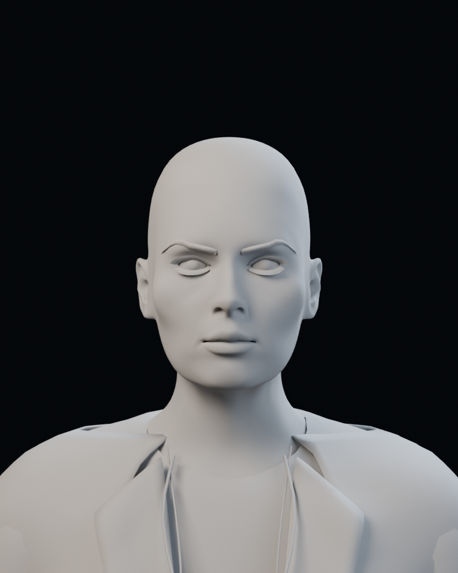

LYRA · face likeness study 01
A first editable face blockout for review. This is not an approved replica.
The camera is estimated from the supplied portrait; the prototype's hair and clothing
are context placeholders. Review the facial contours before polishing those assets.
The current face is preserved as the user-liked baseline. Hair roots now fit
the scalp, with a separate thin root layer beneath the swept hair. Both comparison
renders use that same hair fitting; the wipe still isolates the facial controls.
Supplied reference · full original
Display crop only. Unseen angles remain unknown.
Front contours without hair or skin color

Open lyra-face-study.blend in Blender. Select LyraBody_export and use
the Study_ shape keys to review or disable each local adjustment.
Controls cover cheek hollow/crest, nose tip/base, lip volume, mouth corners and jaw.
Their default values are 1; set them to 0 for the starting face.
No changes are exported into the Godot avatar. The source portrait is a visual reference,
not projected onto the model. Lighting and camera matching still need visual review.